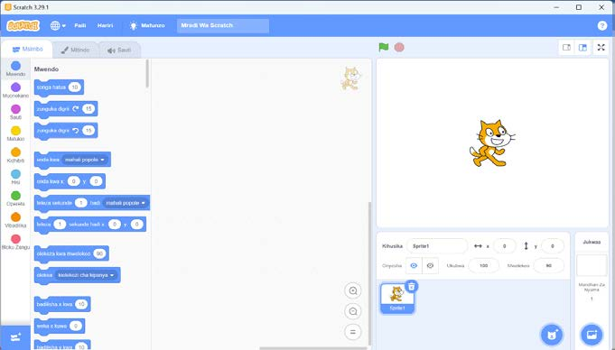
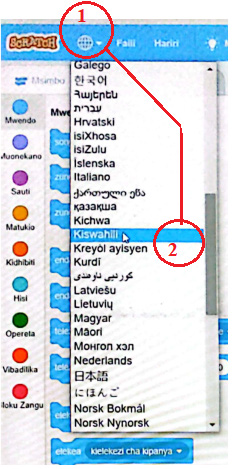

2.
Chagua programu ya Scratch au Quorum kufungua kama inavyoonekana kwenye Kielelezo namba 18(a). Kama programu ya Scratch au Quorum haipo kwenye orodha, andika neno ‘Scratch au Quorum’ katika upau wa kutafuta kama inavyoonekana katika Kielelezo namba 18(b).
3.
Bofya au tumia mishale ‘Scratch au Quorum’ itafunguka kama inavyoonekana katika Kielelezo namba 19.

Maelezo ya programu fikivu ya Quorum: Skrini ya programu ya Scratch au Quorum ikiwa wazi. Paka wa Scratch au Quorum anaonekana upande wa kulia na sehemu za amri ziko upande wa kushoto.Kielelezo namba 19: programu ya Scratch au Quorum.
Kubadilisha lugha
Chagua lugha ya Kiswahili kama inavyooneshwa kwenye Kielelezo namba 20.

Maelezo ya programu fikivu ya Quorum: Menyu ya lugha ya Scratch au Quorum ikiwa wazi. Inaonyesha mahali pa kubonyeza na kuchagua lugha ya Kiswahili.Kielelezo namba 20: kuchagua lugha ya Kiswahili katika Scratch au Quorum.